Buildings 96
Sort
 Jewish Museum Berlin2001 · Berlin
Jewish Museum Berlin2001 · Berlin DZ Bank Building2001 · Berlin
DZ Bank Building2001 · Berlin Berliner Philharmonie1963 · Berlin
Berliner Philharmonie1963 · Berlin Sony Center2000 · Berlin
Sony Center2000 · Berlin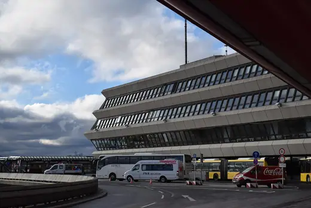
Tegel Airport, Terminal A1974 · Berlin Bauhaus-Archiv1979 · Berlin
Bauhaus-Archiv1979 · Berlin Wohnstadt Carl Legien1930 · Berlin
Wohnstadt Carl Legien1930 · Berlin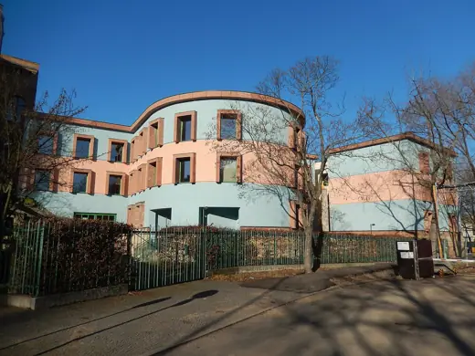
WZB Berlin Social Science Center1988 · Berlin Pergamon Museum1930 · Berlin
Pergamon Museum1930 · Berlin Humboldt Forum2020 · Berlin
Humboldt Forum2020 · Berlin Märkisches Museum1908 · Berlin
Märkisches Museum1908 · Berlin Fernsehturm Berlin1969 · Berlin
Fernsehturm Berlin1969 · Berlin Tempodrom2001 · Berlin
Tempodrom2001 · Berlin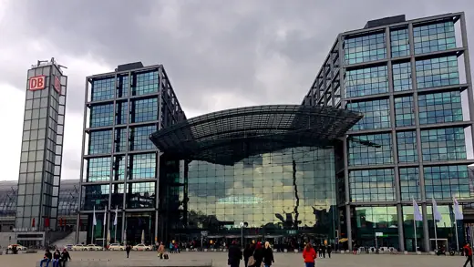
Berlin Hauptbahnhof2006 · Berlin Hamburger Bahnhof1996 · Berlin
Hamburger Bahnhof1996 · Berlin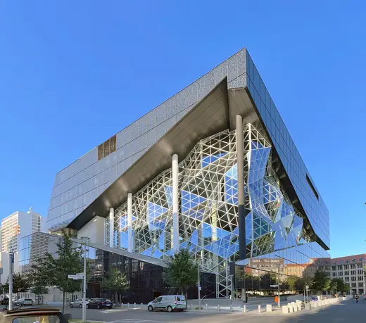
Axel Springer Campus2020 · Berlin Haus des Rundfunks1931 · Berlin
Haus des Rundfunks1931 · Berlin Mäusebunker1981 · Berlin
Mäusebunker1981 · Berlin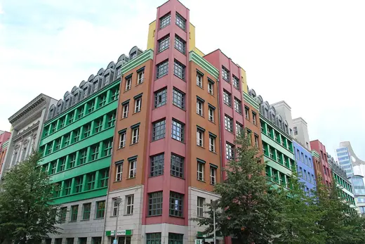
Quartier Schützenstraße1998 · Berlin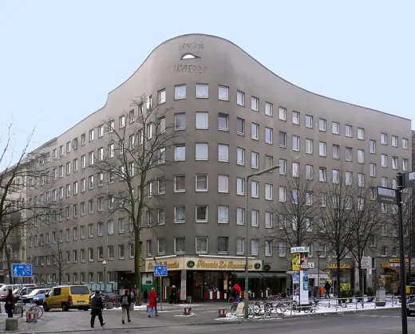
Bonjour Tristesse (Wohnhaus Schlesisches Tor)1984 · Berlin Maria Regina Martyrum1963 · Berlin
Maria Regina Martyrum1963 · Berlin Kino International1963 · Berlin
Kino International1963 · Berlin Red City Hall (Rotes Rathaus)1869 · Berlin
Red City Hall (Rotes Rathaus)1869 · Berlin Neue Nationalgalerie1968 · Berlin
Neue Nationalgalerie1968 · Berlin Reichstag1999 · Berlin
Reichstag1999 · Berlin James Simon Gallery2019 · Berlin
James Simon Gallery2019 · Berlin Lemke House1933 · Berlin
Lemke House1933 · Berlin Alte Nationalgalerie1876 · Berlin
Alte Nationalgalerie1876 · Berlin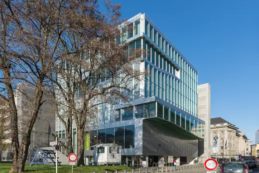
Netherlands Embassy, Berlin2003 · Berlin AEG Turbine Factory1909 · Berlin
AEG Turbine Factory1909 · Berlin Berlin State Library (Haus Potsdamer Straße)1978 · Berlin
Berlin State Library (Haus Potsdamer Straße)1978 · Berlin Gartenstadt Falkenberg1916 · Berlin
Gartenstadt Falkenberg1916 · Berlin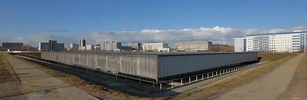
Velodrom and Swimming Hall, Berlin1997 · Berlin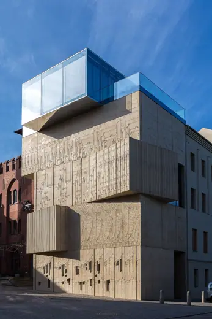
Museum for Architectural Drawing2013 · Berlin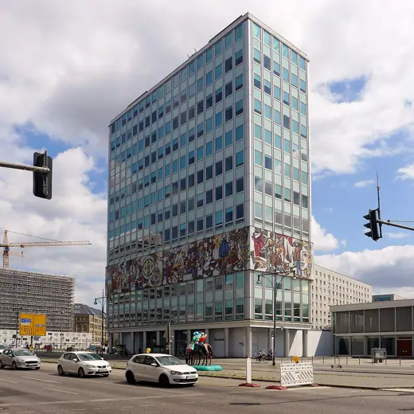
Haus des Lehrers1964 · Berlin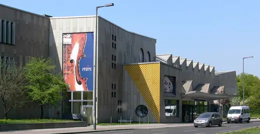
Berlin Musical Instrument Museum1984 · Berlin Kaiser Wilhelm Memorial Church1963 · Berlin
Kaiser Wilhelm Memorial Church1963 · Berlin Memorial to the Murdered Jews of Europe2005 · Berlin
Memorial to the Murdered Jews of Europe2005 · Berlin ICC Berlin1979 · Berlin
ICC Berlin1979 · Berlin Hufeisensiedlung1927 · Berlin
Hufeisensiedlung1927 · Berlin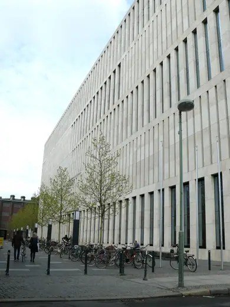
Jacob and Wilhelm Grimm Centre2009 · Berlin Unite d'Habitation Berlin1958 · Berlin
Unite d'Habitation Berlin1958 · Berlin Galeries Lafayette Berlin1996 · Berlin
Galeries Lafayette Berlin1996 · Berlin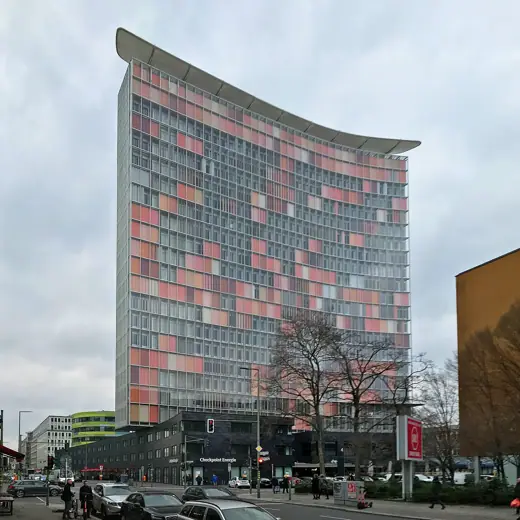
GSW Headquarters1999 · Berlin Bode Museum1904 · Berlin
Bode Museum1904 · Berlin Hochhaus an der Weberwiese1952 · Berlin
Hochhaus an der Weberwiese1952 · Berlin Bierpinsel1976 · Berlin
Bierpinsel1976 · Berlin